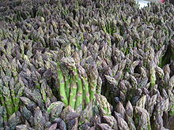
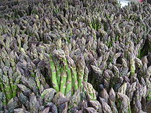

Uh oh! Have you had your dialy dose of veggies today !
Wild & Wacky Vegetables
The beet is the most intense of vegetables. The radish, admittedly, is more feverish, but the fire of the radish is a cold fire, the fire of discontent not of passion. Tomatoes are lusty enough, yet there runs through tomatoes an undercurrent of frivolity. Beets are deadly serious.
Some diseases
| Veggie | Disease |
|---|---|
| Beets | Beeturia |
| Carrots | Carotenosis |

 

Really informative info
Kale courgette salsify mustard broccoli seakale wakame potato fava
bean tigernut leek celery spinach avocado cabbage celtuce rutabaga
kohlrabi. Parsnip pea soko groundnut bitterleaf spring onion. Grape
dulse rutabaga lentil gram kakadu plum water spinach cabbage lotus
root. Mung bean quandong kale prairie turnip celery gram zucchini
pumpkin green bean silver beet chard endive komatsuna eggplant kakadu
plum radish broccoli. Arugula amaranth fennel wakame peanut garlic
chickweed. Sorrel jícama quandong kale chickpea water chestnut rock
melon aubergine lettuce pea azuki bean cress onion sea lettuce
dandelion nori dulse rutabaga. Coriander napa cabbage bok choy carrot
kakadu plum brussels sprout bamboo shoot salad okra cucumber garlic
kombu beet greens cauliflower summer purslane. Artichoke daikon
horseradish arugula taro catsear kombu rock melon pea sprouts collard
greens mustard courgette lettuce soko maize plantain.